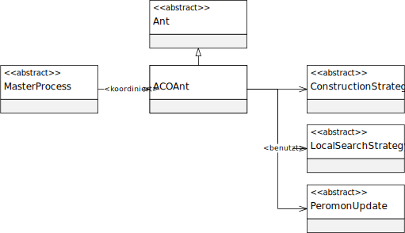

Package eu.andredick.aco.ant
Class AbstractAnt<S extends AbstractSolution>
- java.lang.Object
-
- eu.andredick.aco.ant.AbstractAnt<S>
-
- Direct Known Subclasses:
ACOAnt
public abstract class AbstractAnt<S extends AbstractSolution> extends java.lang.Object
Abstrakte Klasse für eine Ameise.
Definiert primär Schnittstellen, die von der Komponente MasterProzess (sieheAbstractMasterProcess) verwendet werden.
Entwurfsmuster Fassade, in dem Methoden mehrerer Klassen zentralisiert durch eine Schnittstelle angeboten werden.
Weil alle Methoden abstrakt sind, dient diese Klassse zur Schnittstellendefinition und kann als Java-Interface realisiert sein.

-
-
Constructor Summary
Constructors Constructor Description AbstractAnt()
-
Method Summary
All Methods Instance Methods Abstract Methods Modifier and Type Method Description abstract voidconstructSolution()Startet die Konstrukton einer Ameisenlösung.
Die Methode wird von dem Masterprozess aufgerufen.
Die von der Ameise erstellte Lösung soll als Objektvariable vorgehalten werden.abstract java.lang.FloatevaluateSolution()Liefert den Zielfunktionswert der Ameisenlösung.
Die Methode wird von dem Masterprozess aufgerufen.abstract SgetSolution()Liefert die Lösung einer Ameise.
Je nach Zustand der Ameise kann es sich um die gefundene, verbesserte oder leere Lösung handeln.
Abhängig von der Implementierung kann auch unvollständige Lösung geliefert werden.abstract voidlocalSearch()Startet die Verbesserung der konstruierten Ameisenlösung durch Lokale Suche.
Die Methode wird von dem Masterprozess aufgerufen.
Die lokal verbesserte Lösung soll als Objektvariable vorgehalten werden.abstract voidmarkPheromone()Startet die Markierung der Ameisen-Lösung auf den Entitäten des Problems.
Die Methode wird von dem Masterprozess aufgerufen.abstract voidresetAnt()Erneuert den Zustand der Ameise für die nächste Iteration.
Die Methode wird von dem Masterprozess aufgerufen.abstract voidsetSolution(S solution)Setzt eine Lösung für die Ameise.
Die Methode dient dazu, die Lösung einer Ameise mit einer neuen zu überschreiben.
-
-
-
Constructor Detail
-
AbstractAnt
public AbstractAnt()
-
-
Method Detail
-
constructSolution
public abstract void constructSolution()
Startet die Konstrukton einer Ameisenlösung.
Die Methode wird von dem Masterprozess aufgerufen.
Die von der Ameise erstellte Lösung soll als Objektvariable vorgehalten werden.
-
localSearch
public abstract void localSearch()
Startet die Verbesserung der konstruierten Ameisenlösung durch Lokale Suche.
Die Methode wird von dem Masterprozess aufgerufen.
Die lokal verbesserte Lösung soll als Objektvariable vorgehalten werden.
-
evaluateSolution
public abstract java.lang.Float evaluateSolution()
Liefert den Zielfunktionswert der Ameisenlösung.
Die Methode wird von dem Masterprozess aufgerufen.- Returns:
- Zielfunktionswert der Ameisenlösung
-
markPheromone
public abstract void markPheromone()
Startet die Markierung der Ameisen-Lösung auf den Entitäten des Problems.
Die Methode wird von dem Masterprozess aufgerufen.
-
resetAnt
public abstract void resetAnt()
Erneuert den Zustand der Ameise für die nächste Iteration.
Die Methode wird von dem Masterprozess aufgerufen.
-
getSolution
public abstract S getSolution()
Liefert die Lösung einer Ameise.
Je nach Zustand der Ameise kann es sich um die gefundene, verbesserte oder leere Lösung handeln.
Abhängig von der Implementierung kann auch unvollständige Lösung geliefert werden.- Returns:
- Lösung einer Ameise
-
setSolution
public abstract void setSolution(S solution)
Setzt eine Lösung für die Ameise.
Die Methode dient dazu, die Lösung einer Ameise mit einer neuen zu überschreiben.- Parameters:
solution- neue Lösung
-
-